Task 2 - First Simple Ansible Playbook
In this section, your will create the first Ansible Playbook for this lab. This Ansible Playbook will be used to configure VLANs on leaf switches, and to assign VLANs to the server facing port. Further, you will create and learn about:
- using variables inside playbook,
- loop within Ansible by using “with_items”,
- logic of using “when” and “tags” to isolate tasks from whole playbook
Step 1: Using "Atom" text Editor
-
Open “Atom” text editor by double click the icon on desktop. Atom is the recommended text editor for this lab:
-
After opening ATOM, Click the
"No, Never"button on the “Register as default atom:// URI handler” message as show below: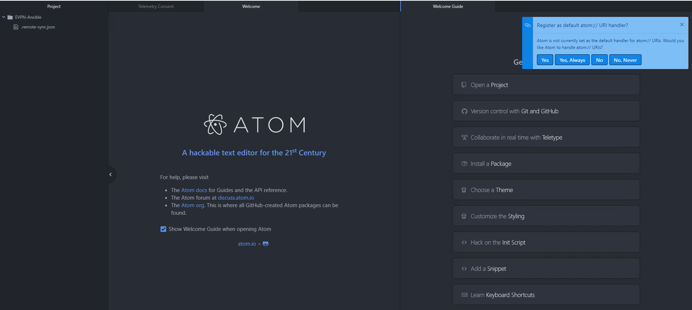
-
For a cleaner view and focussed work later in the labs, optionally, on ATOM you may close the
"Welcome","Welcome Guide"and"Telemetry Consent"tabs
Step 2: Lab folder on Atom
-
After opening ATOM, there should be a folder in the left pane named:
EVPN-Ansible -
Right click on this pre-configured project folder
EVPN-Ansibleand selectNew Fileas shown below: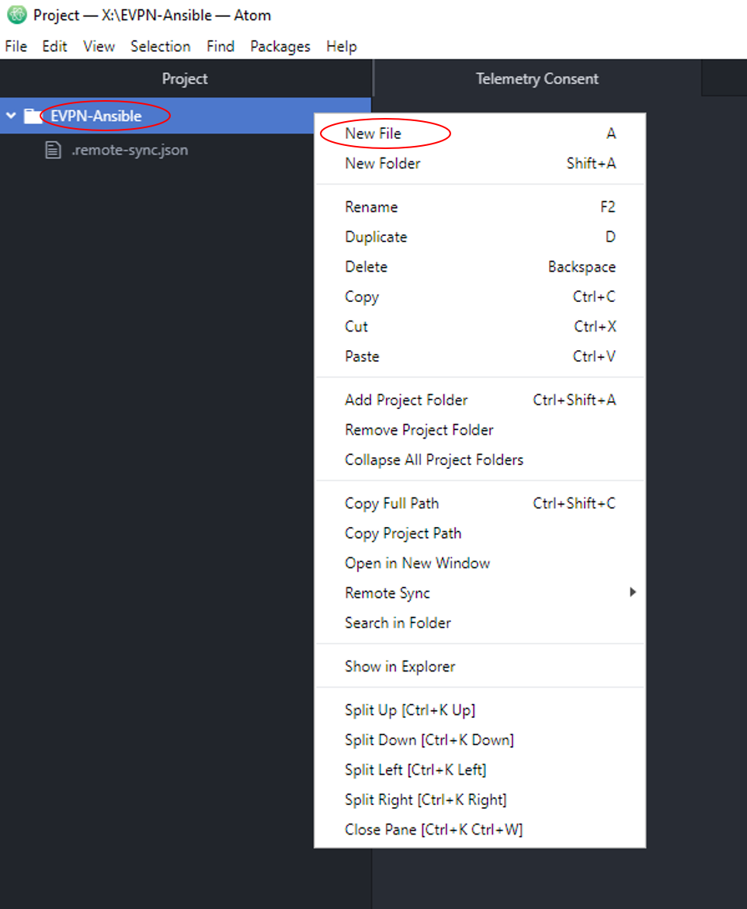
-
Name the new file
vlan_provision.ymland hit enter. This will create the new file: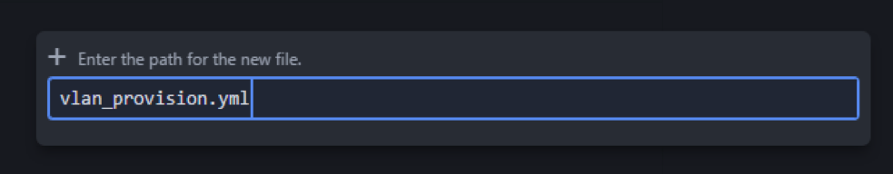
-
Also, on the lower bar right of the ATOM, verify that Language Mode (grammar) of YAML is selected instead of default
"Plain Text". If"YAML"is not selected, then you should Select YAML from the listed options as shown in below screenshot: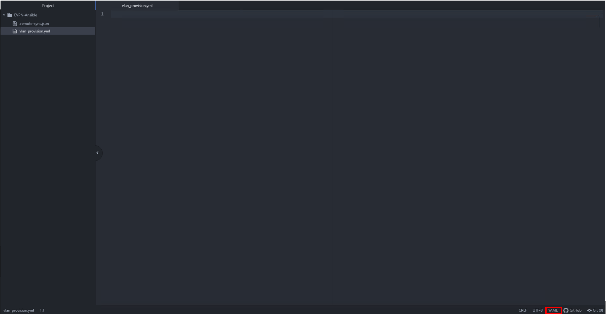
Step 3: Define variables, tasks for playbook
In this step, we are going to create a playbook and define the variable & tasks in the playbook
- In the Atom application, under the
vlan_provision.ymlfile, enter the below content:
Note
YAML is space sensitive. Hence be careful with the spaces in below section. You may copy and paste the full content (start to finish) from below to make sure that spaces are copied properly.
---
#Task 2: Simple playbook assign VLAN to server facing port
- hosts: leaf:jinja2_leaf
Note
- “hosts:” defines the scope of this playbook applies to all switches in group
‘leaf’and‘jinja2_leaf’(these were added within the "hosts" file created in pervious task) - You can review the IP addresses of the two “leaf” switches and one “jinja2_leaf” switch in the “hosts” file (configured in previous steps). For reference, the IP addresses are:
- jinja2_leaf: 198.18.4.104
- leaf: 198.18.4.101
- leaf: 198.18.4.103
Step 4: VLAN tasks in playbook
- In the Atom, in the same
vlan_provision.ymladd below tasks below the previously added content:
Note
YAML is space sensitive. Hence be careful with the spaces in below section. You may copy and paste the full content (start to finish) from below to make sure that spaces are copied properly.
tasks:
- name: provision VLAN
cisco.nxos.nxos_vlans:
config:
- vlan_id: "{{item}}"
state: active
with_items:
- 140
- 141
tags: add vlans
Note
- This play creates multiple VLANs using cisco.nxos.nxos_vlans module
- Above only one play is added but multiple plays can be defined in one playbook under “tasks”, each starts with
“-“ - At the end of this play, we use “tags” to name the play “add vlans”. This is useful to run a specific part of the configuration without running whole playbook.
-
Below screenshot shows how playbook will look:
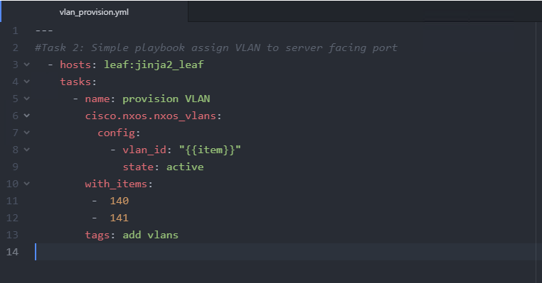
Note
Formatting is extremely important when working with Ansible. Ansible playbook would return errors if the spaces are not properly aligned or formatting is not correct.
-
Click
FileandSave. This will save the playbook, and also ftp the playbook to Ansible server using pre-configured “remote-sync” package.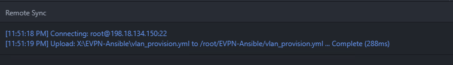
Note
Once the Save button is pressed, then at the lower part of ATOM app, you will see message about connecting to Ansibe host (198.18.134.150) and saving the vlan_provision.yml file.
Step 5: Execute playbook
After creating the playbook, it is now time to execute the playbook. Before executing the playbook, we will verify the leaf switch that desired vlan configurations are not present
- Using the MTPuTTy client, Login (SSH) to
leaf-3switch (or any leaf switch as per hosts: variable in thevlan_provision.ymlfile). Then execute below command:
show vlan brief
This command will show the vlans that currently exist on the leaf switch. As you note from below screenshot, only the default VLAN (vlan number 1) is configured:
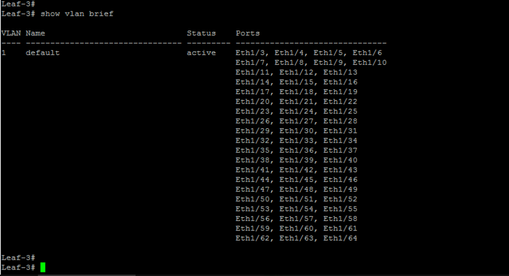
-
Now, from the MTPuTTy, launch a new ssh into Ansible node (198.18.134.150)
-
Execute the ansible playbook using below commands under directory
EVPN-Ansible:
cd ~/EVPN-Ansible
ansible-playbook vlan_provision.yml --tags "add vlans"
The below screenshot shows the execution of the playbook:
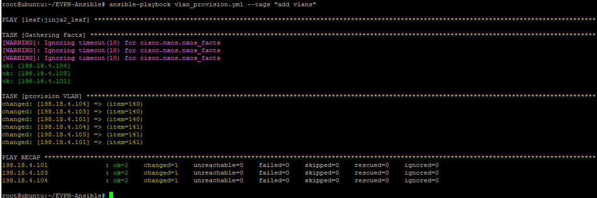
Note
If the playbook fails first time, re-run the playbook again. Make sure to save all the changes in the playbook first before executing the playbook in Ansible.
- After playbook is run successfully, go back to MTPuTTy and login via SSH into
leaf 3again (or the other switch that you logged in earlier in this step) and check if vlan 140 and vlan 141 appears by executing below command again:
show vlan brief
Below screenshot shows the execution of above command in the switch:
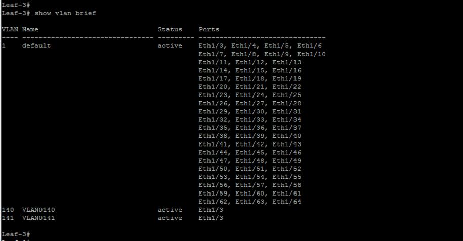
Step 6: Server port VLAN tasks in playbook
We have just tested our first playbook with basic configuration (i.e, by adding 2 VLANs). Now we are going to add more tasks in the same/existing playbook vlan_provision.yml in this step:
-
Lets add new plays in the Ansible playbook to assign VLANs to server facing port. We will configure VLAN towards the server facing ports
-
Go back to ATOM and add the following plays to the existing playbook
- NOTE: YAML is space sensitive. Hence be careful with the spaces in below section. You may copy and paste the full content (start to finish) from below to make sure that spaces are copied properly.
- name: configure server facing port to L2
cisco.nxos.nxos_interfaces:
config:
- name: eth1/3
mode: layer2
- name: configure VLAN for server port
when: ("101" in inventory_hostname) or ("103" in inventory_hostname)
cisco.nxos.nxos_l2_interfaces:
config:
- name: eth1/3
access:
vlan: 140
state: overridden
- name: configure VLAN for server port
when: ("102" in inventory_hostname) or ("104" in inventory_hostname)
cisco.nxos.nxos_l2_interfaces:
config:
- name: eth1/3
access:
vlan: 141
state: overridden
- Click
FileandSaveon ATOM. This will save the playbook, and also ftp the playbook to Ansible server using pre-configured “remote-sync” package
In this new play, we used nxos module “cisco.nxos.nxos_interfaces” and “cisco.nxos.nxos_l2_interfaces”:
* “cisco.nxos.nxos_interfaces” provides the capability to manage the physical attributes of an interface. In this example, it is used to configure “layer 2” on interface Ethernet 1/3
* “cisco.nxos.nxos_l2_interfaces” provides the capability to manage the Layer 2 switchport attributes. In this example, it is used to configure access mode on Ethernet ports 1/3
* We used “when” argument to provide little logic of looking at the IP addresses (as per hosts i.e., inventory file) to the play and then appropriately assign VLANs to those hosts. In our example, the playbook assigned:
* VLAN 140 on leaf1 and leaf3 switches (by matching 101 and 103 in the hosts file)
* VLAN 141 on leaf4 switch (by matching 102 in the hosts file)
Step 7: Execute playbook
Now, we are going to execute this playbook:
- Before executing the ansible playbook, log into switch (leaf1, leaf3 or leaf4) using MTPuTTy client. And check the existing configuration by executing the below command:
show run interface ethernet1/3
-
On MTPuTTy, log back into (or launch a new ssh) into “Ansible” node
-
Execute below command to run the Ansible playbook in the
EVPN-Ansibledirectory:
cd ~/EVPN-Ansible
ansible-playbook vlan_provision.yml
Below screeenshot shows the execution of above playbook:
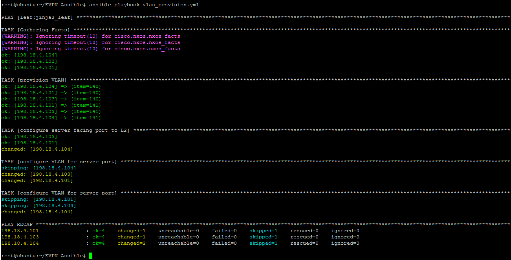
- After we push the configuration, login to the leaf-3 switch, and check if the server facing port has the access vlan configured with the below command:
show run interface ethernet1/3
The output of above command on leaf-3 or leaf-1 is shown in below screenshot:
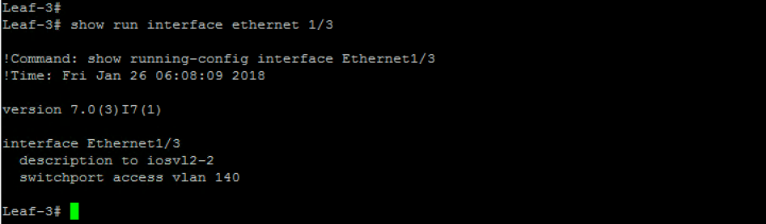
The output of above command on leaf-4 is shown in below screenshot:
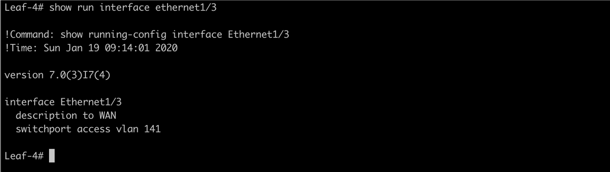
Congratulation! You have created your first ansible playbook, automatically provisioned new VLANs and assigned port to new created VLANs using Ansible. Next we are going to create VXLAN Fabric using Ansible.